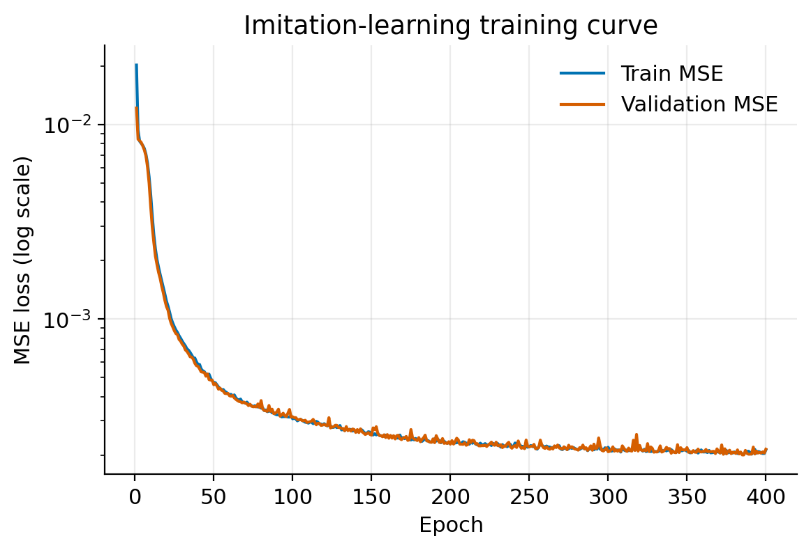
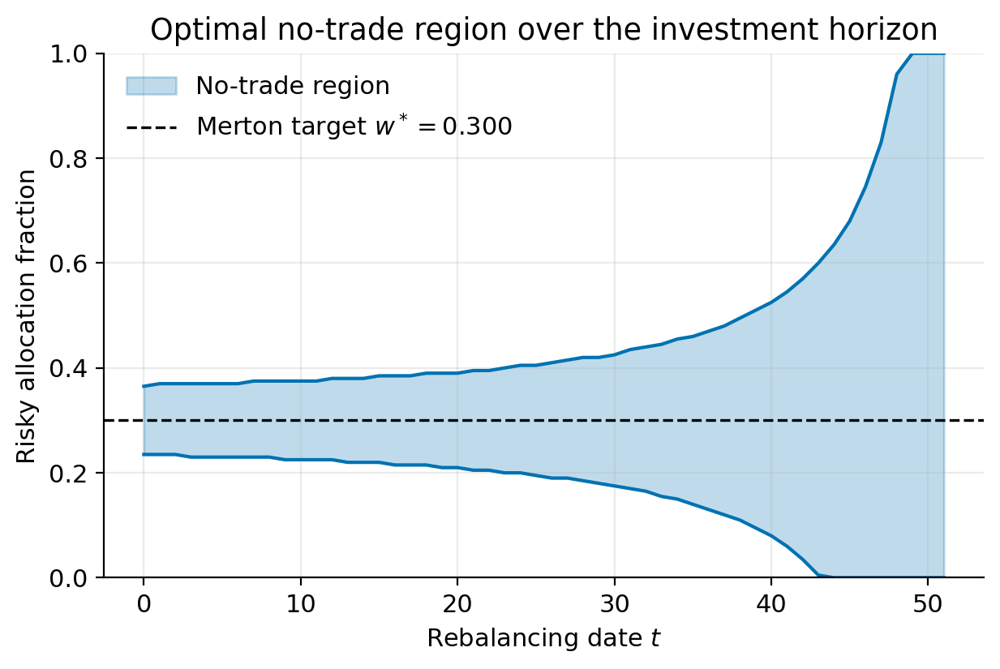
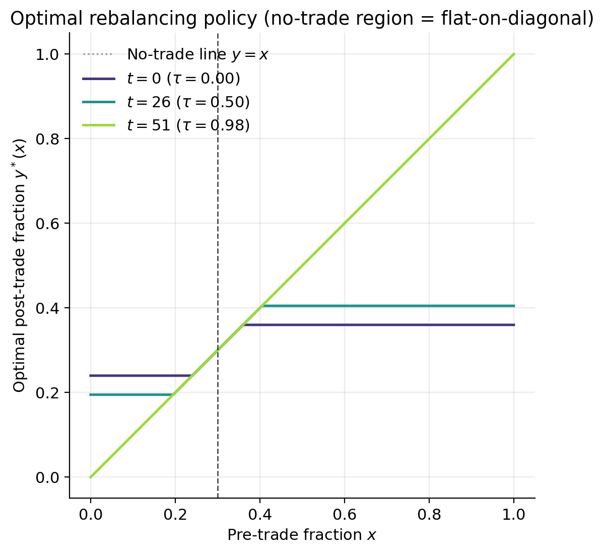
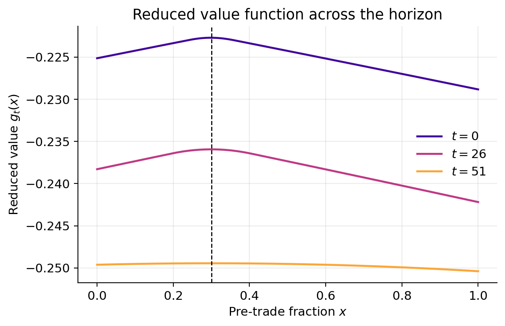
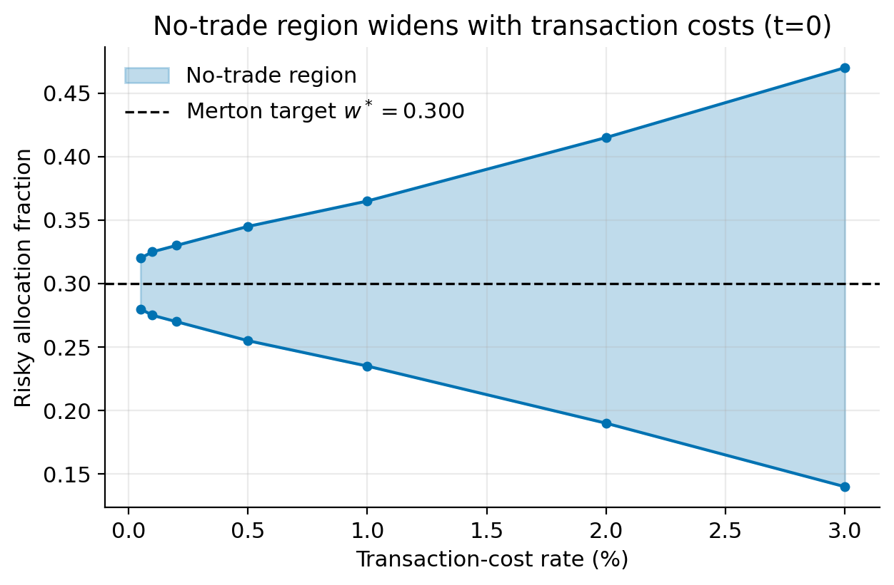
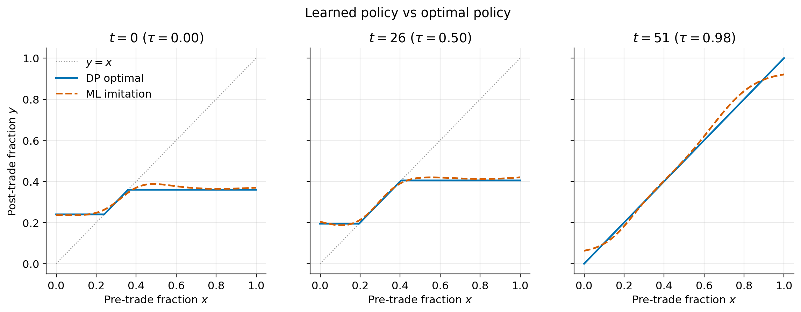
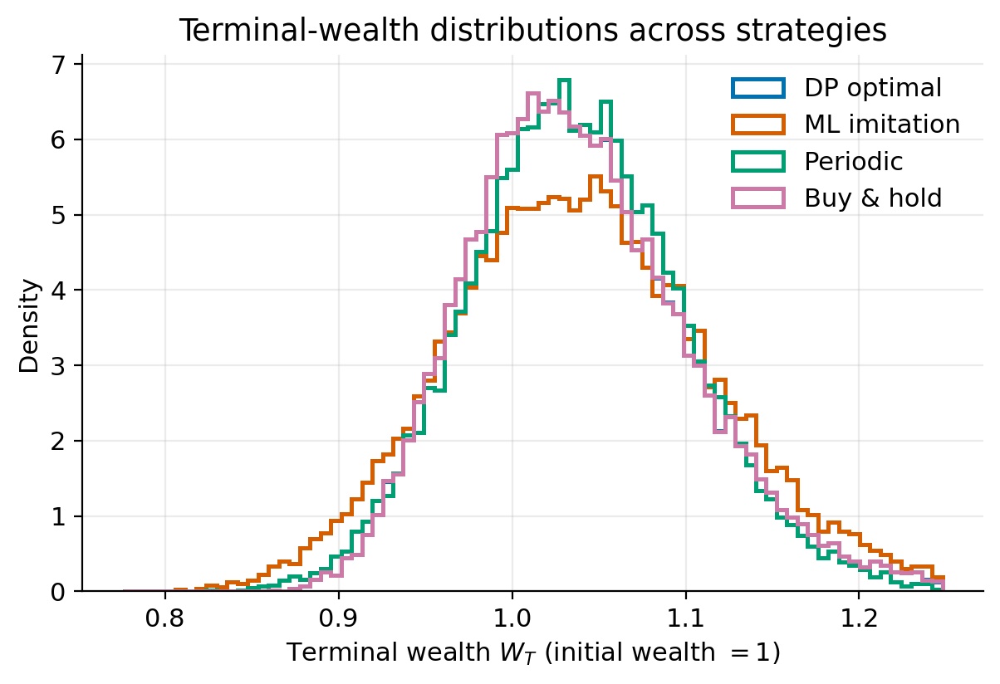
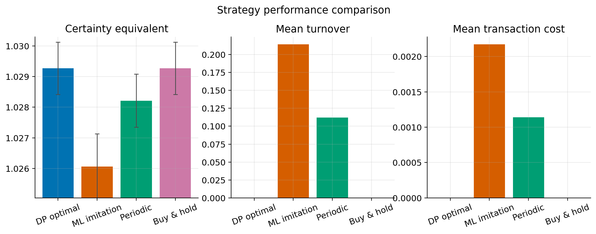
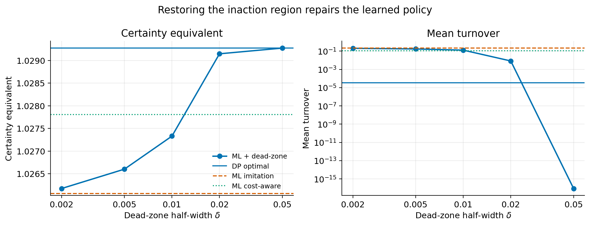
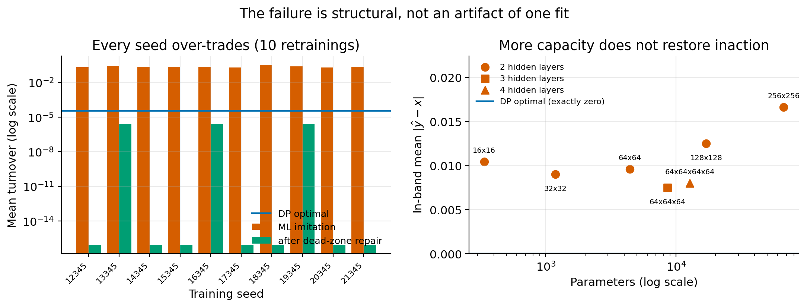

main.tex. For the typeset version see paper/main.pdf. Equations render via MathJax (needs internet); figures load from ../results/figures/.We study portfolio rebalancing between one risky and one risk-free asset as a finite-horizon stochastic control problem with proportional transaction costs and constant-relative-risk-aversion (CRRA) preferences. Exploiting the homogeneity of CRRA utility we reduce the value function to a one-dimensional object in the risky-allocation fraction and solve the Bellman recursion exactly (to quadrature and grid resolution) by backward induction. The solution reproduces the classical no-trade region: a band of allocations around the frictionless Merton target inside which it is optimal not to trade, and toward whose boundary the investor trades when outside. We confirm the textbook comparative statics — the band widens with the transaction-cost rate (consistent with the small-cost \(tc^{1/3}\) scaling) and narrows with risk aversion — and the horizon effect by which the band flares open near the terminal date.
We then ask a computational question: can a lightweight neural network imitate this optimal control? Training a 4,417-parameter multilayer perceptron by supervised regression on the dynamic-programming policy attains a validation mean-squared error of \(2.1\times10^{-4}\), yet a paired Monte-Carlo evaluation (common random numbers, 20,000 paths) shows the learned policy is the worst performer by certainty equivalent. The mechanism is structural: a smooth regressor cannot represent the exact “do nothing” identity on a positive-measure set, so its tiny action-space errors inside the no-trade region are amplified into continuous spurious turnover (mean turnover 0.21 versus \(3\times10^{-5}\) for the optimal policy). We conclude that imitating optimal control requires respecting the inaction region, not merely minimizing action-space error.
A long-only investor who wants to hold a fixed fraction of wealth in a risky asset faces a basic tension. Random returns continuously perturb the realized allocation away from the target, but every corrective trade costs money. In a frictionless world the resolution is trivial: rebalance continuously to the Merton (1969) target. With transaction costs, continuous rebalancing is infinitely expensive, and the optimal policy instead tolerates deviations, trading only when the allocation drifts too far. Characterizing “too far” is the heart of the problem.
Proportional transaction costs transform the single optimal allocation point into an interval of inaction — the no-trade region. This qualitative feature, first identified by Magill & Constantinides (1976) and rigorously established by Constantinides (1986), Davis & Norman (1990) and Shreve & Soner (1994), is robust across model specifications and is the single most important practical consequence of trading frictions.
Contributions: (i) a clean, fully reproducible discrete-time solver that exploits CRRA homogeneity for a one-dimensional state; (ii) a closed-form proportional-cost wealth-update identity that makes the recursion exact and vectorizable; and (iii) the finding that naive action-space imitation systematically fails by violating the no-trade region, with a mechanistic explanation and statistically rigorous paired evidence.
Portfolio optimization. Merton (1969, 1971) solved the frictionless dynamic consumption–investment problem, giving the constant optimal risky weight \(w^\*=(\mu-r)/(\gamma\sigma^2)\) that anchors our no-trade region.
Transaction-cost models. Magill & Constantinides (1976) introduced proportional costs and the no-trade region; Constantinides (1986) quantified its asset-pricing implications; Davis & Norman (1990) and Shreve & Soner (1994) provided the singular-control and viscosity-solution foundations, including the small-cost asymptotics in which the half-width of the band scales like \(tc^{1/3}\). Dumas & Luciano (1991) obtained an exact infinite-horizon solution; Liu (2004) extended to multiple risky assets and Gârleanu & Pedersen (2013) to predictable returns under quadratic costs.
Learning-based control. ML has been applied to high-dimensional control via deep BSDE/PDE solvers (Han, Jentzen & E, 2018) and to hedging under frictions via deep hedging (Buehler et al., 2019). We instead study the simplest paradigm — supervised imitation of a known optimal controller — precisely to isolate when and why it fails.
Time is discrete, \(t=0,1,\dots,N\), with step length \(dt=T/N\). The risky one-step gross return is
\[ R_{t+1}=\frac{S_{t+1}}{S_t}=\exp\!\Big((\mu-\tfrac12\sigma^2)\,dt+\sigma\sqrt{dt}\,Z_{t+1}\Big), \qquad Z_{t+1}\stackrel{\text{iid}}{\sim}N(0,1), \]with risk-free gross return \(R_f=e^{r\,dt}\). This implies the lognormal moments \(\E[R]=e^{\mu dt}\) and \(\E[R^2]=e^{2\mu dt+\sigma^2 dt}\), which validate the quadrature.
At date \(t\), before trading, the investor holds \(A_t\) dollars in risky and \(C_t\) in cash, with wealth \(W_t=A_t+C_t\) and risky fraction \(x_t=A_t/W_t\). The control is the post-trade risky fraction \(y_t\in[0,1]\) (no shorting, no leverage). The pair \((W_t,x_t)\) is the state; \(y_t\) the action.
Normalize \(W_t=1\). Choosing post-trade fraction \(y\) requires trading \(\delta\) dollars; the cost \(tc\,|\delta|\) is paid from cash, so post-trade wealth is \(m=1-tc\,|\delta|\) with \(\delta=ym-x\). Solving the fixed point:
Proof. If \(\delta>0\): \(m=1-tc\delta\) and \(\delta=ym-x\) give \(m(1+tc\,y)=1+tc\,x\); back-substitution yields \(\delta=(y-x)/(1+tc\,y)>0\iff y>x\). The selling branch is symmetric. At \(y=x\), \(m=1\). \(\square\)
The investor maximizes \(\E[U(W_N)]\) with \(U(W)=W^{1-\gamma}/(1-\gamma)\), \(\gamma>0,\gamma\ne1\). After trading to \(y\) at wealth \(m\), one market step gives \(W'=m\,\phi(y,R)\) and fraction \(x'\), where
\[ \phi(y,R)=yR+(1-y)R_f,\qquad x'(y,R)=\frac{yR}{\phi(y,R)}. \] \[ V_N(W,x)=U(W),\qquad V_t(W,x)=\max_{y\in[0,1]}\E_R\big[V_{t+1}(W',x')\big]. \]Proof. Backward induction. At \(N\), \(g_N\equiv1/(1-\gamma)\). If \(V_{t+1}=W^{1-\gamma}g_{t+1}\), then trading sends wealth to \(W\,m(x,y)\) and the step to \(W'=W\,m(x,y)\phi(y,R)\) with \(x'\) independent of \(W\); factoring \(W^{1-\gamma}\) out of the expectation gives the result, and the maximizer \(y^\*(t,x)\) depends only on \((t,x)\). \(\square\)
With \(y^\*(t,x)=\arg\max_y(\cdot)\), the no-trade region \(\mathrm{NT}_t=\{x:y^\*(t,x)=x\}=[\underline{x}_t,\overline{x}_t]\) is an interval around \(w^\*\), and the policy is bang-bang to the boundary:
\[ y^\*(t,x)=\begin{cases}\underline{x}_t,&x<\underline{x}_t\ \ (\text{buy to edge}),\\ x,&x\in[\underline{x}_t,\overline{x}_t]\ \ (\text{hold}),\\ \overline{x}_t,&x>\overline{x}_t\ \ (\text{sell to edge}).\end{cases} \]We discretize \(x\) on \(n_x=201\) points in \([0,1]\); the action \(y\) shares the grid. The return expectation uses 21-node Gauss–Hermite quadrature, \(\E[f(R)]\approx\pi^{-1/2}\sum_i w_i f(R(\sqrt2 z_i))\), reproducing the lognormal moments to relative error \(<10^{-8}\). Backward induction iterates the reduced recursion: per action we precompute \(x'(y,R)\) and \(\phi(y,R)\), interpolate \(g_{t+1}\) at \(x'\) linearly, form the \((n_x\times n_y)\) cost matrix \(m(x,y)\), and maximize over \(y\) by a vectorized argmax. Per-step cost is \(O(n_x n_y n_q)\); the full 52-step solve takes \(\approx0.02\) s. The no-trade edges are read off as the range of \(x\) with \(|y^\*(t,x)-x|\) within one grid spacing.
| Symbol | Meaning | Value |
|---|---|---|
| \(\mu\) | risky drift (annual) | 0.08 |
| \(\sigma\) | risky volatility (annual) | 0.20 |
| \(r\) | risk-free rate (annual) | 0.02 |
| \(\gamma\) | relative risk aversion | 5.0 |
| \(tc\) | proportional cost rate | 0.01 |
| \(T,\ N\) | horizon / rebalancing dates | 1.0 yr / 52 |
| \(w^\*\) | Merton fraction | 0.300 |
We form the supervised dataset \(\{((\tau_t,x_j),y^\*(t,x_j))\}\) over all dates and grid points (\(\tau_t=t/N\)), giving \(52\times201=10{,}452\) examples. The student is a 2×64 \(\tanh\) MLP with sigmoid output (so \(y\in[0,1]\)), 4,417 parameters. We minimize MSE with Adam (lr \(10^{-3}\), weight decay \(10^{-5}\), batch 256, 400 epochs), 15% validation hold-out; it converges to validation MSE \(2.1\times10^{-4}\) in under 20 s on CPU. Inference is a single forward pass — no grid lookup.




| \(tc\) | lower | upper | width | \(\gamma\) | \(w^\*\) | lower | upper | width |
|---|---|---|---|---|---|---|---|---|
| 0.0005 | 0.280 | 0.320 | 0.040 | 2 | 0.750 | 0.615 | 0.885 | 0.270 |
| 0.001 | 0.275 | 0.325 | 0.050 | 3 | 0.500 | 0.400 | 0.600 | 0.200 |
| 0.002 | 0.270 | 0.330 | 0.060 | 5 | 0.300 | 0.235 | 0.365 | 0.130 |
| 0.005 | 0.255 | 0.345 | 0.090 | 8 | 0.188 | 0.140 | 0.235 | 0.095 |
| 0.01 | 0.235 | 0.365 | 0.130 | 12 | 0.125 | 0.090 | 0.160 | 0.070 |
| 0.02 | 0.190 | 0.415 | 0.225 | |||||
| 0.03 | 0.140 | 0.470 | 0.330 |


Four strategies are simulated on a common set of 20,000 return paths (common random numbers). \(\mathrm{CE}=((1-\gamma)\E[U(W_T)])^{1/(1-\gamma)}\).
| Strategy | CE | 95% CI | \(\E[W_T]\) | Turnover | Cost | Track. err. |
|---|---|---|---|---|---|---|
| DP optimal | 1.02927 | [1.02842, 1.03013] | 1.0390 | 0.00003 | 4×10⁻⁷ | — |
| Buy & hold | 1.02927 | [1.02842, 1.03013] | 1.0390 | 0.00000 | 0 | 0.0002 |
| Periodic | 1.02821 | [1.02735, 1.02908] | 1.0375 | 0.1119 | 0.00114 | 0.0056 |
| ML imitation | 1.02606 | [1.02500, 1.02713] | 1.0402 | 0.2141 | 0.00217 | 0.0052 |
| Strategy | CE | 95% CI | \(\E[W_T]\) | Turnover | Cost | Track. err. |
|---|---|---|---|---|---|---|
| DP optimal | 1.02393 | [1.02293, 1.02494] | 1.0372 | 0.4526 | 0.00453 | — |
| Buy & hold | 1.02378 | [1.02292, 1.02464] | 1.0337 | 0.5000 | 0.00500 | 0.0083 |
| Periodic | 1.02269 | [1.02183, 1.02356] | 1.0320 | 0.6120 | 0.00614 | 0.0100 |
| ML imitation | 1.02063 | [1.01956, 1.02171] | 1.0351 | 0.7065 | 0.00709 | 0.0065 |
| Start | DP vs | Mean adv. (×10³) | \(t\)-stat | DP better @ 95% |
|---|---|---|---|---|
| on-target | ML imitation | +2.799 | 20.1 | yes |
| on-target | Periodic | +0.918 | 24.1 | yes |
| on-target | Buy & hold | −0.0001 | −0.4 | no (tie) |
| off-target | ML imitation | +2.959 | 28.8 | yes |
| off-target | Periodic | +1.108 | 17.0 | yes |
| off-target | Buy & hold | +0.140 | 2.0 | yes |


Three findings.
A diagnosis is worth little unless it predicts a fix. If the failure really is the missing inaction region, restoring that region should recover the lost performance — and nothing else should be needed. We test two ways.
Dead-zone wrapper (inference time). Leave the network alone and snap small predicted trades to exact inaction: \(y = x\) whenever \(|\hat y - x| \le \delta\), else \(y=\hat y\). Returning \(x\) exactly is what matters — cost is charged on any deviation.
Cost-aware objective (training time). Charge the student for trading more than its teacher: \(\mathcal{L} = \mathrm{MSE}(\hat y, y^{*}) + \lambda\,\mathbb{E}[(|\hat y - x| - |y^{*} - x|)^{+}]\). The asymmetry is deliberate: penalizing \(|\hat y - x|\) outright would also discourage the large, correct trades made from outside the band.

One seed and one architecture describe a failure but do not establish one. We retrain across
10 independent seeds and 7 architectures spanning two orders of magnitude in capacity. See
scripts/run_robustness.py and the figure below.

Interpretation. The failure is not capacity or optimization but a representational mismatch with the geometry of optimal control: a free boundary plus an identity map. A smooth regressor approximates the identity with a wiggle of size \(\varepsilon\), producing turnover of order \(\varepsilon\) per step (first order in \(N\)) while the allocation benefit is only second order — so small \(\varepsilon\) still hurts.
Remedies. (i) A dead-zone wrapper: predict band edges / a hold-vs-trade classifier and snap to “hold” for small predicted trades, restoring inaction. (ii) A cost-aware loss penalizing predicted turnover, or imitation in value space (regress \(g_t\), act greedily), aligning training with economic performance.
Computational trade-offs. For this 1-D problem the DP solve is trivial (0.02 s), so ML offers no speed gain here; its appeal is asymptotic, in higher dimensions where the grid is infeasible. Our result is a cautionary calibration: build the inaction structure into the hypothesis class or loss before scaling.
Practical implications. The strength of buy-and-hold over one year, and the optimal policy’s near-inaction on target, both underline that the cheapest correct action is usually to do nothing. Turnover is a cost, not a virtue.
We formulated portfolio rebalancing under proportional transaction costs as a finite-horizon stochastic control problem, reduced it to one dimension via CRRA homogeneity, and solved it exactly by backward induction. The solver reproduces the classical no-trade region and its comparative statics — widening with cost (\(\sim tc^{1/3}\)), narrowing with risk aversion, flaring near the horizon. A lightweight neural network trained by naive supervised imitation, though accurate in mean-squared action error, is the worst-performing strategy because it cannot represent the no-trade region and over-trades. The lesson generalizes: imitating optimal control requires encoding the inaction structure — via a dead-zone, a cost-aware loss, or value-space learning — not merely minimizing action error.
Every number, table and figure here is regenerated by a single command,
python scripts/run_all.py, in about 20 seconds on a laptop CPU. All randomness
derives from one seed (Config.seed = 12345) and every economic and numerical
parameter lives in a single Config dataclass, so repeated runs reproduce the
committed tables, checkpoints and figures byte for byte. The only artifacts excluded
are wall-clock timings, which are machine-dependent and written to a separate file.
An automated pytest suite checks the claims above rather than merely exercising
the code: the quadrature against analytic lognormal moments; the proportional-cost identity,
including that no-trade is exactly costless; that the band brackets the Merton fraction, widens
with \(tc\) at a fitted log–log slope consistent with \(tc^{1/3}\), narrows with
\(\gamma\), and collapses to the Merton point at \(tc=0\); that the band is stable under grid
and quadrature refinement; that the learned policy is off the \(y=x\) diagonal at
every point inside the band; and that every figure, table entry and quoted statistic
in the manuscript agrees with the generated results file. The exact environment is pinned in
requirements-lock.txt.
refs.bib (16 entries). This HTML is a convenience
preview; the authoritative manuscript is paper/main.tex, typeset as
paper/main.pdf (rebuild with python scripts/build_paper.py, or
compile on Overleaf). Generated from results/ artifacts produced by
python scripts/run_all.py.